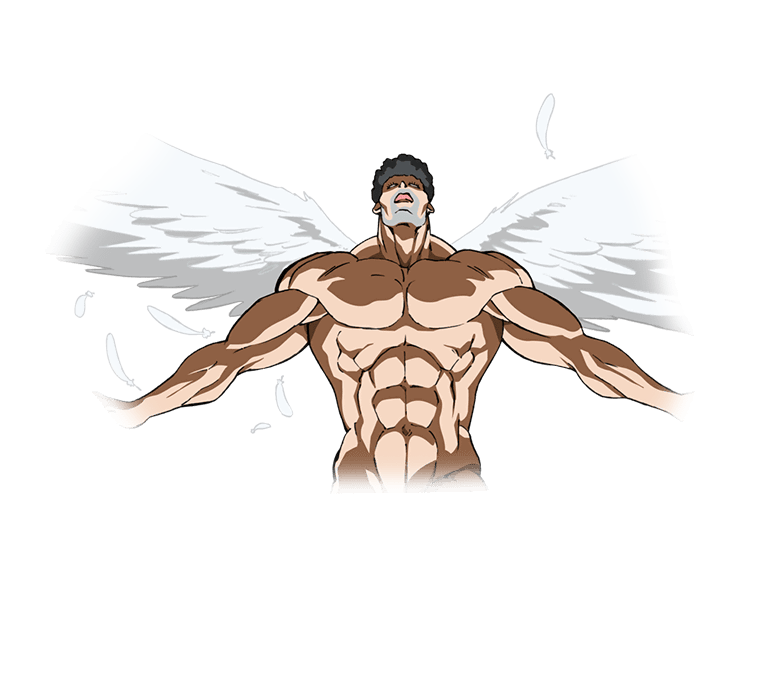

第二百三十二章 天使从天而降
“水母？”
被月姬抱着退到一边的昴并没有露出慌张的神色，而是稍微疑惑的看着在浅滩上肆虐巨大怪物，突然出现的怪物捕获了许多玩家、嗯，准确的说是女性玩家！貌似是个好色的水母，系统的视觉补正让昴清楚的看到水母的触手不老实的在女性玩家的身体上乱钻，没有被抓到的其他玩家则是拿出自己的武器向怪物发起进攻，不过……
“真弱呢！”月姬说出了昴的心声，与怪物对抗的玩家里，似乎没有尖端序列的玩家，那些向水母发起进攻的玩家轻轻松松的就被水母撂翻了。
“然后，会长大人要大展身手吗？”月姬将昴松开，挪揄的看着昴，通过管理员权限的查询，昴的属性值和技能熟练度都不高，和SAO时代一样，作为顶尖公会红衣骑士团的团长的斧战士昴，战斗力其实只有五！
“你现在的排名已经落后了哦。”
“虽然很丧气，但是不可能的，我打不过它呢。”昴摇了摇头，很诚实的承认自己的弱小，每个人都有自己的长处和弱项，她并不是以个人战斗力见长的，并不需要去掩饰这种事，不过……
“我希望有机会真正的见识下月姬大人的身手！”昴盯着月姬的眼睛认真的说道。
虽然她很弱小，但是她眼前这位大人却很强大，虽然昴从来没有真正的亲眼见过对方出手，所知的也仅限于阿尔戈的报道，但会这样说却并非是怀疑什么，而是单纯的崇拜着对方！
“抱歉，我可不打算动手，这只怪物就留给参赛的选手们吧，毕竟这是活动MOB来着。”月姬耸了耸肩，然后坐回到原来的位置上，水母怪物与玩家正在战斗中，这边是暂时没空搭理了，所以也不用担心再被袭击。
眼睛朝光幕看了一眼，莉兹贝特几个还在和洞窟里的小水母战斗着，蓝子也在，不过路克丝和优纪已经不在里面了，追踪了下两人的ID……接近中！
抬头看去，水面上有东西向着水母急射而去溅起了一路的浪花，路克丝和优纪的坐标就在那个浪花里，她们速度减慢，然后浪花也变小了很多，露出了其中路克丝的身影，踩着一个盾牌如同冲浪般的在水面滑翔，不过其上并没有看到第二人的身影……
优纪呢？
这样想着的同时，漆黑的剑从水里冒出来，黑暗精灵从水里射出向着巨大的水母发起突袭。
“蓝子啊……”
看着向着水母发起进攻的优纪，月姬一眼就看出来是蓝子在优纪身上施加了可以在水下自由行动的增益魔法。
“那是卖炒面的！”
咳！昴说的不是优纪，是路克丝，之前为了收集视线，路克丝几个人最开始是用卖炒面这种方式的。
路克丝和优纪合作，只是十数秒便斩断了所有的触手，将被水母捕获的玩家解救下来。
“快看快看！那个女的好厉害啊！”
“真的耶!好帅啊！”
将玩家解救后，路克丝和优纪不断的在水母的周围游走，时不时的对水母展开攻击，虽然两人斩断了它很多的触手，但是再生能力惊人的水母却很快的长了回来，并且这样的攻击并没有给水母制造太大的伤害。
频频被骚然，却又对两个小虫子毫无办法，这似乎让水母很生气，四根粗壮的触手亮起了光芒，然后狠狠地打在水面上，巨大的浪花并没有冲天而起，将水母那巨大的身影完全遮挡，同时不断有水柱从水面升起，让路克丝和优纪四处翻飞躲避着明显是水母的某个群攻技能的水柱效果。
突然！
粗壮的触手从包裹着水母的水壁上射出，费力的躲避着毫无规律的水柱的两人一时不察，路克丝被抓住了脚，优纪被抓住了握剑的手！
水母的触手是附加麻痹效果的，被触手抓住脚或者手的话，基本就可以宣判出局了，虽然路克丝想用那把新手剑拯救下自己，但是在看到水母的触手的瞬间也破碎了，到底是新手武器，攻击力和耐久值都不给力！
然后，水母完成对路克丝和优纪的捆绑Play！
“啊，被抓住了！”
虽然这样说着，但是月姬没有丝毫打算动手去解救优纪的打算，虽然挺关心优纪的，但是她可不是护犊子，成长伴随着挫折，过度保护可不是什么好事。
而且，她啊其实很不开心呢，被两个丫头强迫穿泳衣什么的……
“man——！”
一个巨大的黑影从天而降，将水母的触手斩断！
被斩下来的触手失去了束缚的力量，化为光碎消失，但是因为其附带的麻痹效果，路克丝和优纪都没有力气飞行，只能身不由己的向海面掉了下去。
“久等了！路克丝！优纪！”
莉法和蓝子几个也从洞窟的那个方向飞了过来，西莉卡接住了路克丝，蓝子也把妹妹接在了怀里。
“修行不足呢，优纪。”蓝子笑了笑，刚刚远远的看到优纪和水母的战斗，以优纪的能力，明明可以躲开才对，但是却大意了，所以才会失手被抓！
“绝对不会有下次的！”优纪信誓旦旦的保证到，同时身上被治疗术的光芒笼罩，水母施加的麻痹毒马上被祛除，虚弱感褪去，“谢了，姐姐！”随意的道了声谢后，优纪便从姐姐的怀里挣脱出来，然后向着水母那边飞去。
刚刚事情不能不好好回敬对方！另外，她好像发现了水母怪物的弱点了！
“音小姐！弱点……在这里！”
这样喊着的同时，优纪发动长距离的突刺向水母发动攻击。
虽然蓝子和莉法她们及时给予路克丝和优纪支援，但是直接出手救下优纪和路克丝的，却是另一个人。
“哦~我明白了！”
魁梧的死库水“天使”看着水母防御的部位点了点头，优纪的攻击被水母的触手阻挡，之前一直很柔软一砍就断的触手在防御下面的弱点的时候却硬如钢铁，虽然攻击并没有奏效，但是却为他们指明了水母的弱点所在。
“爆裂……”
所有的触手都被优纪吸引，趁着这个机会音小姐蓄力决胜一……
“Oh no！！！”
伴随着不甘的话语，音小姐沉默，不，是沉没了！
罪魁祸首……鲨鱼！
一只音小姐大腿粗细的鲨鱼从水里窜出来咬了一口音小姐的裆下！致使音小姐不慎落水！
“……咳！”
月姬将手别在背后，眼睛看向路克丝那边，她们的分数落后的挺多的，她能帮的只有这个了，所以，如果还是输了，就自认倒霉吧！
“那些……是鲨鱼！？”昴掩着嘴吃惊的叫道，虽然说大场面见得多了，但是眼前这一幕绝对是前所未见的！虽然猜出了【沙滩的英雄】的含义，但昴从来没想到，最后会是这样的大场面！
海面上升起了或大或小，无数的旗帜，准确的说，是鱼鳍！
……
【从天而降的姿态，请参考性感囚犯的姿态，声优请参考蓝色天马的那个矮子】